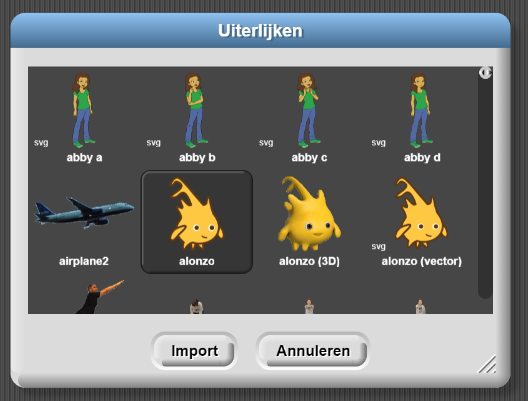
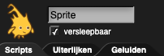
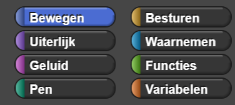

- Zorg ervoor dat je Snap! geopend hebt (http://snap.berkeley.edu/run) en dat je bent ingelogd.
-
Maak twee "Alonzo"-uiterlijken voor je sprite. De video hieronder laat zien hoe je dat moet doen. Onder
de video staan gedetailleerde instructies.
De volgende instructies leggen uit wat er in de video gebeurt:
-
Selecteer "Uiterlijken..." van het bestand
(
 ) menu, kies "Alonzo," en klik op "Importeren"
en dan op "Annuleren."
) menu, kies "Alonzo," en klik op "Importeren"
en dan op "Annuleren."
- Klik met de rechtermuisknop (op een Mac, ctrl+klik) op het Alonzo uiterlijk in het midden van het Alonzo Uiterlijk (Zoals gedaan wordt in de video hierboven) en selecteer "Kopieer".
- Klik met rechtermuisknop (of ctrl-klik) op het nieuwe uiterlijk genaamd "Alonzo(2)", en selecteer "bewerken." Je opent nu het Tekenprogramma.
- Klik op "spiegelen ⟷", dat is de knop met de twee rechtopstaande driehoeken. Klik hierna op "OK". 
-
Selecteer "Uiterlijken..." van het bestand
(
-
Programmeer de sprite om van kostuum te veranderen als er op geklikt wordt...
- Klik op het Scripts-menu linksboven in het scherm.
 -
Bouw het script dat hieronder afgebeeld staat. Dit doe je door blokken van de linkerkant naar
het midden te slepen. Bekijk de video voor meer uitleg.
Je vindt blokken in paletten met hun bijpassende kleur. Paars voor Uiterlijk, Oranje voor Besturen enz.
Sleep een blok onder een ander blok om ze aan elkaar te plakken. De dunne witte balk laat zien waar de blokken aan elkaar blijven plakken als je de muisknop loslaat.
- Klik op het Scripts-menu linksboven in het scherm.
-
Vink het vakje naast het woord 'versleepbaar' uit. Dit voorkomt dat spelers per
ongeluk de sprite verslepen als ze erop klikken.
- Test je programma: klik op Alonzo op het grote witte veld rechts in het scherm. Dit witte veld wordt ook wel het speelveld genoemd. Als je script werkt, zou Alonzo nu de andere kant op moeten kijken.